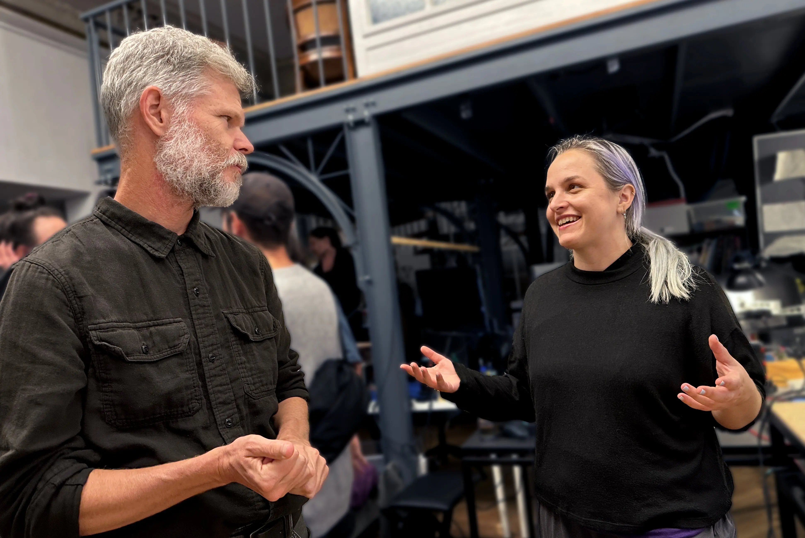
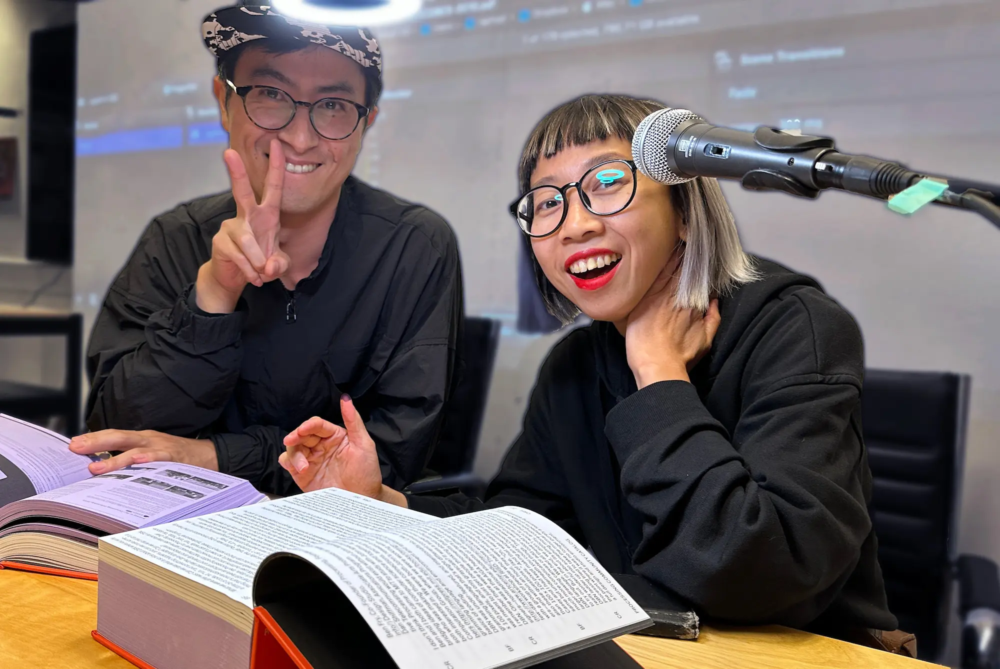
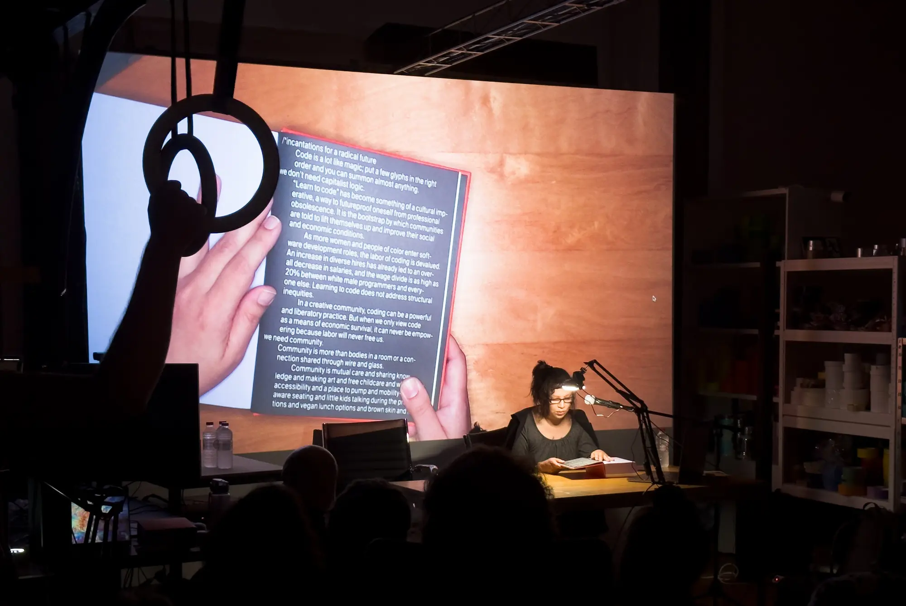
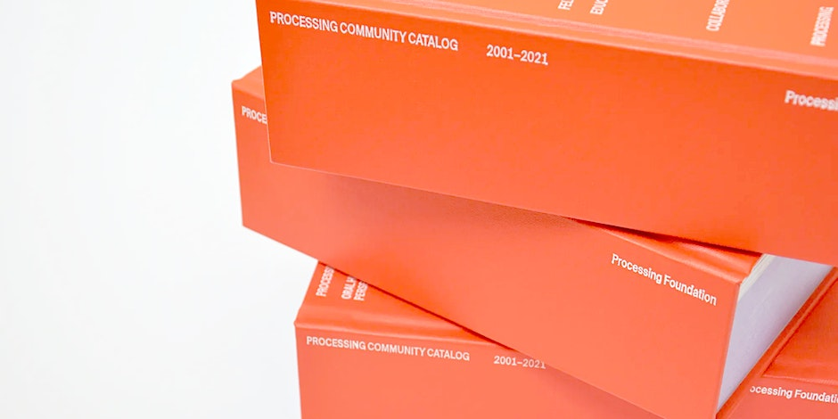

Processing Community Catalog Reading
Hosted by Creative Code Berlin - with special guest Casey Reas
2023-09-23

It was an exciting in-person event at Prachtsaal Studio. We were thrilled to have Casey Reas as our special guest for a special reading of the 20th Anniversary Processing Community Catalog, a celebration of the art+tech community. This nearly 1000-page book celebrates the achievements and creativity of the Processing community, featuring open-call submissions from those who've explored the potential of Processing, p5.js, and beyond.
We were honored to have Casey Reas joining us for this reading. With Ben Fry, Reas launched Processing in 2001. Processing is an open-source programming language and environment for the visual arts. Processing is widely used by thousands of artists and designers worldwide and by educators teaching programming fundamentals in art and design schools.
Attendees, especially those who have contributed to the catalog, were warmly invited to read a selected page during the event. You can also browse the online version of the catalog on archive.org.
The event was honored by distinguished guests:
- Rachel Uwa, the founder of The School of Machines
- Abe Pazos, generative artist, educator, the co-founder of Creative Code Berlin
- Olivia Jack, the creator of hydra
- So Kanno, Berlin based Japanese artist creating award-winning art robots
- Joreg, the author of vvvv software massively used in new media art installations
- Anna Lucia, an artist who draws with code
- Andreas Rau, interaction Designer & generative artist
and many other artists and educators.
Processing Community Catalog Reading was organized by Creative Code Berlin, an initiative promoting collaboration between artists and coders via two monthly meetups.
It was an unforgettable night of inspiration, connection, and celebration of the Creative Coding community in Berlin.
Raphaël de Courville, generative artist, the co-founder of Creative Code Berlin and Community Lead of the Processing Foundation



